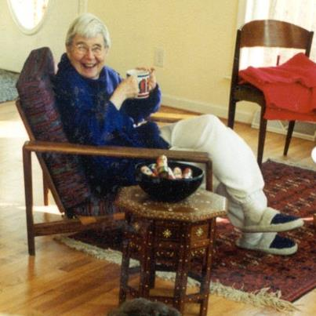

Irene Belkin Stevens
(April 22, 1924 - Feb 18, 2013)

It is with sadness that we announce the death of Irene Stevens, but with joy that we celebrate her life, and share part of it with you.
Irene was born a child of Russian parents in Paris in 1924. She and her two brothers moved with their parents to New York City in 1928. After high
school, she entered Iowa State University and studied landscape architecture, graduating in 1945 with her BSc. She married John Minard Stevens (known
as "Steve") the same year. She and Steve developed an exciting professional career, working as something of a team, he in urban planning and she as a
landscape architect. The first years in Iowa were followed by a number of moves, including stays in Corpus Christi, Atlanta, St. Louis, and
Cincinnati, and during that time, the birth of two children, Carol, and then Susan.
Irene's life in the 50s and 60s concentrated on family and on her children's education, with Steve's job taking first priority. She did highly
commended professional work in her time, but she chose not to make a career of it. Rather, she made a personal career of sharing her (and her
husband's) love of the natural world with her kids. As well, she fostered in her children a deep love for learning, based on her own background, her
cultured Russian background, and her love of languages (Carol and Susan both speak fluent Russian and French now), travel, exploration, and of
experiencing the cultural richness of other nations. Her young family traveled the breadth of the USA, experiencing all available national parks,
arboreta and botanical gardens. In 1960, a conference for Steve took them all to the Netherlands, thus starting a period of living and travelling
throughout Europe (including the witnessing of the Prague Spring in 1968), largely from the comfort of a rented Renault. Steve and Irene followed
this with additional international travel, living in and planning infrastructure for a remarkable array of places: Bogota, Brisbane, San Juan,
Guatemala City, Hong Kong, and Lagos. Steve ultimately served as a consultant for a major firm in South Carolina, and retired with the family to
Columbia in the 1980s. He died in 1992 --and shortly after that, Irene became a regular and much appreciated part of the Herbarium (she got her own
key), carving out a little area in the back in which she could listen to NPR and repair specimens. She took part in class field trips --the Flora
classes-- whenever possible.
I always considered Irene as a special gift to the Herbarium. I saw her a lot--and we talked each other's ears off: Irene patiently absorbing my
botanical humor, and she offering an opinion or two on things (history, local and national politics, the arts). Over the years, Irene's interest in
the Herbarium only increased. She became something of a student of the specimens within the Ravenel Collection, applying herself to their scrupulous
repair and upkeep, skillfully sewing and gluing plant parts onto paper. What always struck me about Irene was her overwhelming sense of devotion,
first to Steve, Carol, and Susan, all of whom she utterly adored, and then to a kind of personal passion for truly appreciating the wonder and magic
of natural history and the arts, and a passion for doing things well, and thoroughly. And then along came her granddaughter, Maya! Talk about
adoration!
The University of South Carolina and its Herbarium are better places now because of Irene Stevens. I am truly glad to have known her, and I will
treasure her memory. Her daughter Carol provides a Russian maxim, which is suitable here: "Пусть земля ей будет пухом.
" Let the earth be as feathers
for her... --John Nelson
|